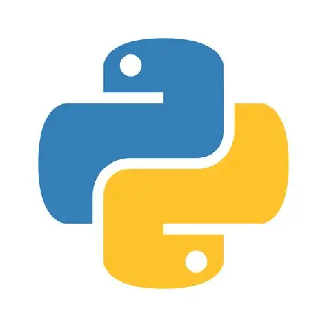

🍪 Programacion 🍪
Puedes encontrar mucha informacion de python y renpy sientete libre de observar
# Desde renpy
label start:
"¡Hola, mundo!"
return
# Desde python
print("¡Hola, mundo!")
-

Python + Renpy - Solo Renpy
Aqui puedes saber como funcionaria python y renpy en sincronia.
Volver a navegador